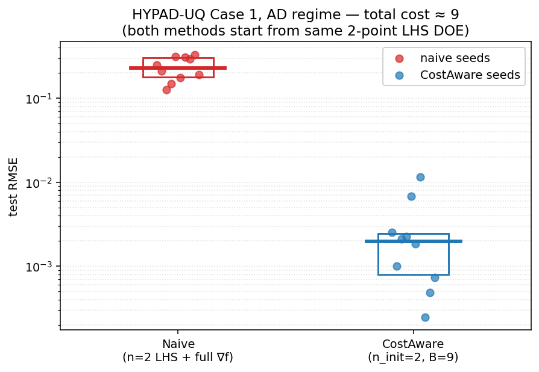

Naive Gradient-Enhanced Baseline vs. Cost-Aware Active Learning#
Overview#
The hypad_learning_curves example shows that the cost-aware policy outperforms function-only and derivative-only baselines in the AD regime (automatic differentiation, \(c_d = 0.5\,c_f\)). A natural follow-up question is: if automatic differentiation makes derivatives cheap, why not just take the full gradient at every initial-design point and skip the adaptive loop altogether?
This example tests that idea. The “naive” baseline is the textbook gradient-enhanced GP: pick \(n\) Latin-hypercube points, evaluate the function and the full \(d\)-dimensional gradient at each, fit the GP once, and report test RMSE. No active learning, no iteration. The cost-aware policy is run head-to-head with the same starting design size and the same total budget.
—
Cost Accounting#
For the HYPAD-UQ Case 1 fin in 7 dimensions, the AD regime uses \(c_f = 1\) and \(c_d = 0.5\). A single LHS point with a full gradient therefore costs
so \(n\) naive LHS points exhaust a budget \(B = 4.5\,n\). To match, the cost-aware policy is run with the same starting LHS design (size \(n_{\text{init}}\)) and a sequential-design budget of \(B\), so the two methods spend the same total resource.
For this comparison we choose \(n = 2\), so \(B = 9\) cost units — small enough that the naive method’s full-gradient bias is exposed but large enough that the cost-aware policy can take a meaningful number of observations.
—
Methods#
Naive (fresh LHS + full gradient). Draw 2 Latin-hypercube points \(\mathbf{x}_1,\mathbf{x}_2\). At each point, evaluate the function value and all 7 partial derivatives — i.e. the full gradient as 7 directional observations along the standard basis. Fit a directional-derivative GP on the resulting (2 function + 14 directional) training set. No further observations are taken.
Cost-aware active learning. Same 2-point initial design. The sequential design loop then spends up to \(B = 9\) cost units of additional observations, choosing each one by maximising the unified score \(s = \rho(\mathbf{x})\,p(\mathbf{x})/c\) over the joint set of candidate function evaluations and directional derivatives (see Cost-Aware Active Learning with Directional Derivatives).
Both methods are evaluated on the same 400-point validation set sampled from the Case 1 input distribution. Ten random seeds are used.
—
Result#
{kind=link}

Method |
Median RMSE |
IQR |
|---|---|---|
Naive (n=2 LHS + full ∇f) |
2.30e-1 |
[1.79e-1, 3.04e-1] |
CostAware (n_init=2, B=9) |
1.98e-3 |
[8.00e-4, 2.45e-3] |
The cost-aware policy is roughly 116× more accurate on the median, under the same total cost and the same initial-design size.
—
Why the gap is so large#
The naive method has only 2 spatial points in a 7-dimensional space. Even with the full gradient at both points (16 total observations: 2 function values and 14 partial derivatives), the GP has almost no information about the response surface away from those two anchors. Densely gradient-enhancing two points cannot substitute for spatial spread when the input space is high-dimensional.
The cost-aware policy uses its budget very differently. Inspection of the selected observation sequences shows that nearly every cost-aware run takes two to three function evaluations to create new anchor points, interspersed with ten to thirteen directional derivatives at the expanded anchor set. Representative sequences from individual seeds:
seed 5000: dddddfdddfdfddd (12 d + 3 f)
seed 5001: dddddfdddddfdddd (13 d + 3 f)
seed 5007: dddddfdddddddddf (14 d + 2 f)
seed 5008: dddddfdddddddddf (14 d + 2 f)
The cost-aware policy in effect discovers that adding even one or two new anchors is far more valuable than continuing to take directional derivatives at the same two starting points. This is precisely the “structural bottleneck” the cost-aware framework was designed to navigate: once an anchor’s local gradient covariance has been informed by a few derivatives, the marginal information return on more derivatives there drops, and the score for a new function-anchor candidate overtakes the score for more derivatives at the existing anchors.
—
Takeaways#
Dense gradient information at a single point does not substitute for spatial coverage. Naive gradient-enhanced GPs work well in low dimensions but degrade quickly as \(d\) grows because the anchor count needed for adequate coverage grows accordingly.
Cost-aware active learning automatically navigates the spread-vs.-density tradeoff under any cost model. In the AD regime it spends most of its budget on cheap derivatives but reserves a few expensive function evaluations to expand the anchor set when the marginal information from more derivatives at existing anchors becomes small.
The cost-aware policy is robust to small starting designs. Even with only two initial LHS points, it recovers a 100×-better surrogate than the textbook gradient-enhanced approach with the same total cost.
—
Reproducing the Figure#
python active_learning/hypad_naive_vs_costaware.py --ns 2 --n-seeds 10
python active_learning/plot_hypad_naive_vs_costaware.py
Outputs:
active_learning/data/hypad_naive_vs_costaware.json— per-seed RMSE for both methods.docs/source/_static/hypad_naive_vs_costaware.png— headline figure.